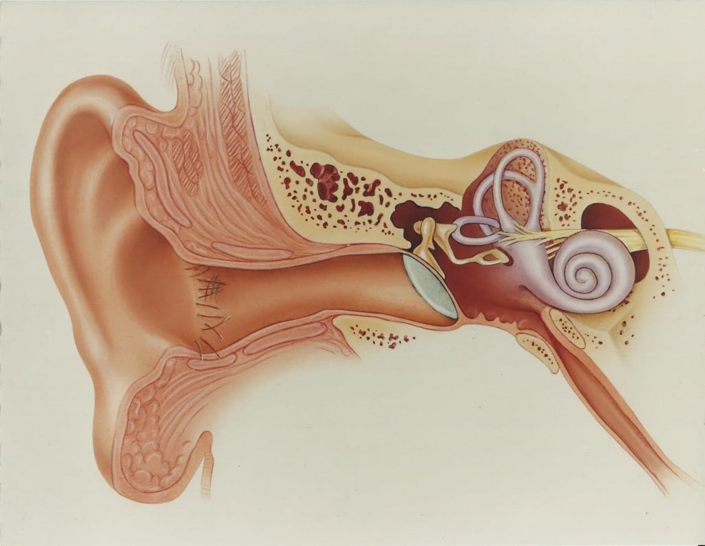

26.04.2022
Foarte des, pierderea auzului este observată mai întâi nu de persoana cu deficiențe de auz însuși, ci de rudele sale. Oamenii din jurul pot observa că volumul care vă este confortabil este de fapt prea mare. Tinitus periodic, vorbirea nedesluşită, senzația că o persoană vorbește prea încet, indică pierderea auzului. Ce trebuie să facă în această situație și este posibilă restabilirea auzului? Oaspetele nostru invitat, audiologul Gabriel Valean, vă va spune.

– Bună ziua, doctore. Vă mulțumim pentru v-ați acordat timpul din programul dvs. încărcat. Spuneți, vă rog, potrivit statisticilor, la ce vârstă începe pierderea auzului?
- Bună ziua, vă mulțumesc pentru invitație, sunt întotdeauna fericit să vă ajut. În primul rând, vreau să spun că pierderea auzului afectează aproximativ 700 de milioane de oameni din întreaga lume într-o măsură sau alta, deși aceste statistici includ dereglări de toate tipurile - de la cele locale, care nu necesită restaurare, până la surditate. În al doilea rând, nu credeți că pierderea auzului este boala unui bătrân. Din păcate, nu este așa.
Pierderea auzului poate fi cauzată de o varietate de motive, inclusiv: leziuni, expunere prelungită la zgomot puternic, sunete puternice, diverse boli, administrarea anumitor medicamente și efecte toxice. Transportul public, în special metroul, munca în producție, muzică tare, administrarea antibioticelor. Chiar și gazele de eșapament și vopselele pe bază de xilen pot afecta. Acum, printre persoanele care caută ajutor, există mulți adolescenți și persoane sub vârsta de 40 de ani cu pierderea auzului senzorineural cauzată de ceea ce se numește în mod obișnuit un mediu nefavorabil.
– Cum poate înțelege o persoană că are probleme?
– Pierderea auzului apare foarte rar brusc. Problemele se dezvoltă de obicei mult timp și treptat, astfel încât acestea pot trece neobservate. O persoană se adaptează, adesea nu există dificultăți în viața de zi cu zi. Dacă o persoană a devenit mai rău la distingerea sunetelor de fundal, există zgomot, descărcare sau durere în urechi, crește volumul sunetului, uneori întreabă din nou discursul adresat sau se obosește să vorbească cu alții, atunci aceasta indică mai întâi o problemă existentă.
Este important să înțelegem că majoritatea persoanelor cu deficiențe de auz sunt jenate să recunoască că nu înțeleg ce li se spune. De asemenea, trebuie să depună eforturi uriașe pentru a se concentra asupra discursului interlocutorului și a-l înțelege pe deplin, ceea ce poate duce la stres și oboseală severă, ceea ce crește doar riscul pierderii complete a auzului.
– Dacă auzul a început să scadă, se poate face ceva?
– Din fericire, știința și medicina modernă se dezvoltă rapid și acum există un medicament care poate ajuta. Se numește și acțiunea sa se bazează pe restabilirea funcționării normale a celulelor părului cohlear. Aceasta este cauza principală a pierderii auzului.
Dacă auzul a scăzut treptat, gradul de recuperare depinde de mulți factori, cum ar fi vârsta, gradul de leziune, infecția și așa mai departe. Cu o leziune minoră, dinamica pozitivă este observată în 99% din cazuri! Nu există un astfel de efect al oricărui medicament.
În caz de pierdere bruscă a auzului, dacă terapia este începută la timp, aproximativ 92% din astfel de cazuri se termină pozitiv, iar auzul este complet sau aproape complet restaurat.
– Cum funcționează acest medicament?
– Totul depinde de cauza pierderii auzului și de natura bolii. De exemplu, în caz de tulburare circulatorie în labirintul îmbunătățește metabolismul în țesuturi și celule.
Dacă există pierderea auzului postinfecțioasă, atunci ingredientele naturale incluse în compoziție distrug bacteriile, îmbunătățesc metabolismul țesutului și transmiterea impulsurilor nervoase.
Cu inflamație sau, de exemplu, cu otită purulentă, acest remediu are un efect general antiinflamator, analgezic, antiseptic. Pacienții observă o scădere a umflăturii, eliminarea simptomelor inconfortabile într-un timp scurt.
Cu tulburări de percepție a sunetului , care sunt asociate cu zgomot crescut, traume, efecte toxice sau medicamentoase, ajută la ameliorarea umflăturii nervului auditiv, elimină efectele hemoragiei în urechea internă și inhibarea procesului inflamator.
– De ce este atât de eficient? Și există analogi?
– nu are analogi, deoarece este un remediu complet natural care nu conține antibiotice și nu perturbă activitatea sistemelor și organelor.
Datorită ingredientelor naturale :
- normalizează circulația sângelui localizată în regiunea auriculelor;
- ajută la recuperarea rapidă și regenerarea cartilajului deteriorat al organelor auditive;
- afectează grupuri mari de bacterii de la Pseudomonas aeruginosa la streptococi, distrugând agenții patogeni și virușii;
- afectează ușor zona inflamată, elimină cauza principală a dereglărilor;
- contribuie la îmbunătățirea funcției auditive;
- oprește dezvoltarea tumorii, activează procesele regenerative locale;
- contribuie la normalizarea proceselor metabolice în structurile celulare ale auriculelor.

– Care sunt indicațiile pentru utilizarea ?
– Acest medicament are un spectru larg, poate fi utilizat atât în scopuri terapeutice, cât și preventive. Se recomandă utilizarea pentru a restabili auzul în prezența următoarelor indicații:
- procese inflamatorii;
- congestie a urechii (în special sezonieră, cu schimbări de temperatură);
- încălcarea funcției auditive;
- diverse senzații de durere;
- predispoziție genetică (surditate, boli otolaringologice care apar într-o formă cronică în rude apropiate);
- creșterea sarcinii auditive de lucru sau creșterea nivelului de zgomot domestic;
- utilizarea anumitor medicamente care au un efect negativ asupra funcției auditive.
Acest remediu va elimina toate simptomele deranjante și va preveni dezvoltarea unui proces patologic cu complicații concomitente. Practica arată că administrarea cursului de face posibilă evitarea purtării unui aparat auditiv în viitor.

– Este uimitor! Se pare că acum oricine cu pierderea auzului își poate rezolva problema?
– Totul depinde de boală și de gradul de deteriorare. ajută cel mai adesea în stadiile incipiente și este, de asemenea, indispensabil pentru prevenirea pierderii auzului. Dar, în mod individual, poate restabili auzul chiar și cu încălcări mai grave.
– Totuși acțiunea sa este impresionantă!
– Aveți dreptate, până acum acesta este singurul remediu cu un spectru de acțiune atât de larg și eficient.
– Vă mulțumim că ne-ați spus cum să facem față pierderii auzului. Mai am o singură întrebare. În ce farmacii poate fi cumpărat acest remediu?
– Sunt întotdeauna bucuros să ajut. Și vreau să le spun tuturor că, dacă aveți probleme de auz sau vă aflați în zgomot constant, doriți să ascultați muzică tare sau să vă uitați la televizor, atunci cu siguranță aveți nevoie de cel puțin un curs de . Și în ceea ce privește a doua întrebare, vă voi spune sincer că este imposibil să cumpărăm acest produs într-o farmacie. Acest lucru se datorează faptului că producătorii au reziliat temporar contractul cu toate rețelele de farmacii.

– De ce? De unde putem cumpăra acest remediu?
– Producătorii încearcă să vândă în farmacii de câteva luni, dar prețul stabilit de farmacii a fost pur și simplu inacceptabil. Marja de aproape 1000% doar a ruinat oamenii! Reprezentanții farmaciilor au spus că un preț atât de ridicat este justificat de faptul că este un remediu eficient și nimeni nu va mai cheltui bani pe medicamente învechite în fiecare lună dacă există posibilitatea de a urma cursul de și de a uita de problemele de sănătate. Și acest lucru, spun ei, duce la pierderi financiare uriașe pentru farmacii și companii farmaceutice. De aceea au crescut atât de mult prețul cu amănuntul. Dar mă grăbesc să vă asigur, producătorul a stabilit vânzări online și chiar a oferit o reducere de 50% la o cantitate limitată de produs. Prin urmare, îi sfătuiesc pe toți cei interesați să plaseze o comandă chiar acum.
Doctore, ascult la căşti tot timpul. Este dăunător?
Este dăunător să depășiți nivelul volumului, precum și aspectul și utilizarea căștilor în transport. Căștile trebuie să fie deasupra capului sau să fie făcute dintr-o impresie de ureche. V-aș recomanda un curs preventiv de , pentru a nu vă face griji că vă puteți pierde auzul din cauza căștilor.
Vă mulțumesc foarte mult doctor pentru a răspunde la toate întrebările! Ați fost de mare ajutor. Am comandat deja acest remediu și cred că mă va ajuta cu siguranță.
Vă voi povesti despre experiența mea. Auzul meu s-a deteriorat și toată lumea a început să mă sperie că în curând voi deveni complet surd și am nevoie urgentă de a selecta un aparat auditiv înainte de a fi prea târziu. În general, nu am vrut nici o operație pe creier - oricum un lucru riscant. În plus, situația mea nu a fost atât de rea. Am decis să încerc la sfatul dvs. Și un miracol - aud totul, chiar și cum un vecin sforăie prin 3 pereți!
Doctore, zgomotul mă deranjează foarte mult. Cum să mă protejez și sunt periculoase dopurile de urechi?
Orice zgomot este dăunător. Purtați căști speciale sau încercați , ceea ce va preveni problemele de auz în viitor. În ceea ce privește dopurile de urechi, acestea nu pot fi folosite des. Asigurați-vă că alegeți un design pentru auricul dvs., urmăriți curățenia și termenul de valabilitate.
Ce coșmar, se pare că mama mea a început să aibă probleme judecând după acest articol. Comand urgent de înainte de a fi prea târziu.
Nu cred că acest lucru este real deloc.
Nici eu nu am crezut, până nu am încercat-o singură. Vecinul meu mi-a adus , avea jumătate din pachet. Și s-a întâmplat un miracol, acest remediu m-a ajutat de inflamația eternă a urechii interne și de pierderea parțială a auzului din această cauză. Acum am uitat de urechi dureroase, dureri de cap și pot auzi perfect.
Uau, nu știam că așa ceva este posibil acum.
Ce ați vrut? Medicina nu se oprește.
Doctore, apare periodic tinitus, ce ar trebui să fac?
Acesta este tinitus. Aceasta nu este o boală, ci un simptom. Zgomot, scârțâit/bubuit/sunet/pocnete/sunet de nisip/zumzet este o reacție normală a celulelor părului urechii interne care apar cu: tulburări ușoare de auz, stres, traume acustice, manifestări somatosenzoriale, tulburări vasculare și un efect secundar al anumitor medicamente. Recomand administrarea cursului de pentru a preveni consecințele ulterioare.
După o boală gravă, au existat momente în munca mea când nu am dormit suficient, am lucrat timp de 18 ore. Lucrarea, așa cum se spune, a fost pentru rezultat. Și după-amiaza târziu, când adrenalina scade, observam că într-o conversație cu partenerul meu, nu înțeleg sensul cuvintelor pe care le rostește. Am auzit literele, dar nu le-am putut pune în cuvinte. Dacă m-am concentrat, atunci pentru o vreme am înțeles sensul a ceea ce s-a spus din nou. Și apoi am auzit din nou niște prostii. Desigur, după ce m-am odihnit, totul a revenit la normal. Dar cred că e neurologie sau auz? Poate că voi încerca , astfel încât să nu existe probleme în viitor.
Mi se întâmplă și mie. Am fost verificat de medici, ei spun că totul este bine, cu excepția auzului. Deci, acum voi încerca probabil și eu acest medicament.
este mântuirea mea. Auzul meu a început să scadă rapid. Probabil că în câțiva ani nu aș fi auzit nimic dacă nu ar fi fost posibilă îndepărtarea inflamației cu și îmbunătățirea compoziției lichidului din urechea internă din cauza căreia au existat probleme.
Doctore, am început să observ pierderea auzului, ce ar trebui să fac?
În 90% din cazuri, pierderea auzului poate fi prevenită cu succes dacă acționați la timp. Dacă dvs. sau cei dragi ați început să observați că ați început să măriți volumul la televizor sau să cereți din nou cuvinte, atunci vă sfătuiesc să faceți o audiogramă, să verificați dacă există dopuri de sulf și să urmați un curs de pentru a restabili auzul și a preveni consecințele ulterioare.
Lasă feedback-ul:
Comentariul dvs. este la moderație